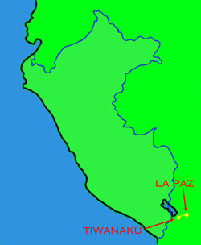
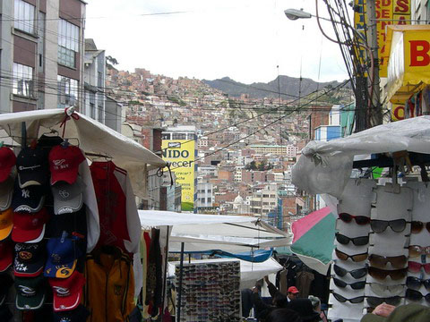
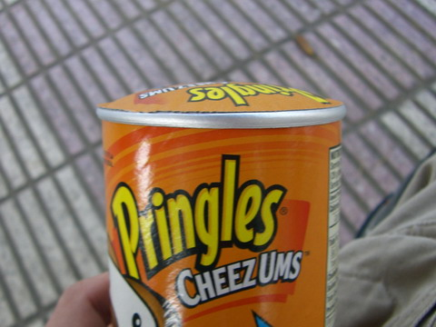
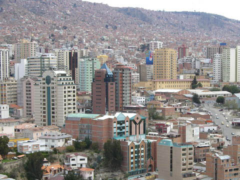
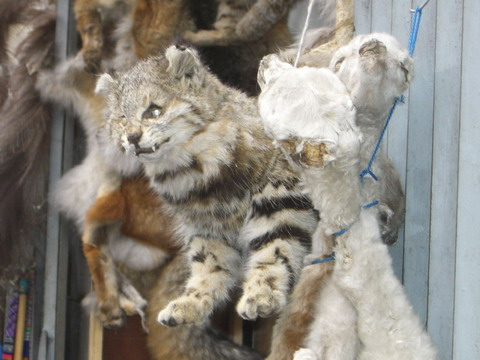
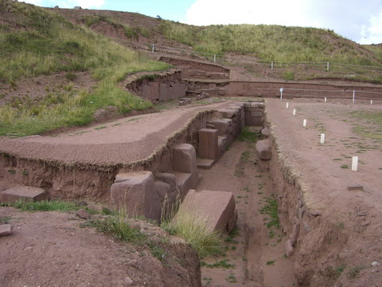
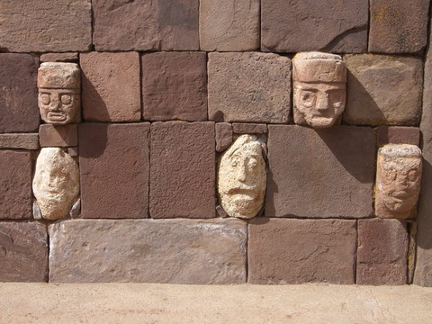

bolivia

la paz
la paz is a rather large urban sprawl of a city nestled in a three sided valley. lots of markets and houses on the hills stretching off into the distance.
at 3600m it is quite a shock to the system when you arrive. this can of pringles is a good demonstration of the pressure difference. other things that exploded on us include shampoo and sunscreen.
here's a shot of the cbd from a neaby mirador (lookout). houses, houses and more houses...
we stayed not too far from the witches market where along with dried llama fetus' (which are buried in house foundations for good luck) you can get stuffed cats! lovely.
tiwanaku
a few hours out of la paz on the way to the peru border are the pre-inca ruins of the tiwanaka people. it was quite amazing to see that the ruins are still being excavated. there is a lot of empty flat grassland there so who knows how much they'll turn up.
part of the ruins were temples where previously head priests had their "portraits" spookily hung on the walls.